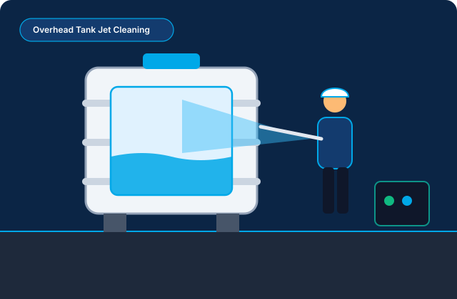

Category 01 • Rooftop Reservoirs
Overhead Water Tank Cleaning
Overhead tanks sit exposed to rooftop heat, dust ingress, and mineral oxidation from borewell or municipal supply. Our crew isolates the outlet line, drains residual water, extracts bottom silt with wet-vacuums, scrubs interior walls using material-safe pressure jets or rotary brushes, and sanitizes the chamber.
Preparation Note: Please switch off the automatic transfer pump 4–6 hours prior to the appointment so the water level drops to roughly 15–20%, reducing water wastage during dewatering.